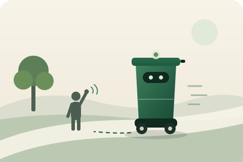

Parks and green spaces
Bins that come to visitors and dog walkers, and a companion cart for litter crews.
LOR Robotics
We are building a family of simple, single-job outdoor robots that share one brain, one drive module and one safety system. First up: a mobile smart bin that comes when it is called.

First robot
Our first robot is a mobile smart bin for parks, campuses, estates and events. It moves the bin, so people and crews do less walking.
Summon it from a phone, or just ask in plain words. It rolls over at walking pace.
It walks beside a litter picker, so the bag never has to go back to the van.
When it is full it heads for the collection point, then back to its dock to charge.
Walking pace, a hardware emergency stop, and a fence around the grounds it works on. The AI can plan a job but never drives the wheels.
Status: running in simulation today. We start building the first physical prototype this autumn at our test base in Latvia.
The platform
Every LOR robot shares the same core: the drive and power module, the navigation brain, the safety system, the skills interface and the fleet app. Each body does one job well.
That keeps every robot simple, cheap to build and easy to service, and each new job reuses everything the last one proved.
Pilots
We are looking for a small number of sites to run supervised pilots on private or managed land, in the UK and the Baltics. Our test base is in Gulbene, Latvia.
Bins that come to visitors and dog walkers, and a companion cart for litter crews.
Bins that shuttle between buildings and the collection point on a schedule.
Bins that move to where the crowd is, then take themselves to the compactor.
Contact
Tell us about your site and the first job you would hand to a robot.
hello@lor-robotics.com Our inbox is being set up. If a message bounces, please try again soon.